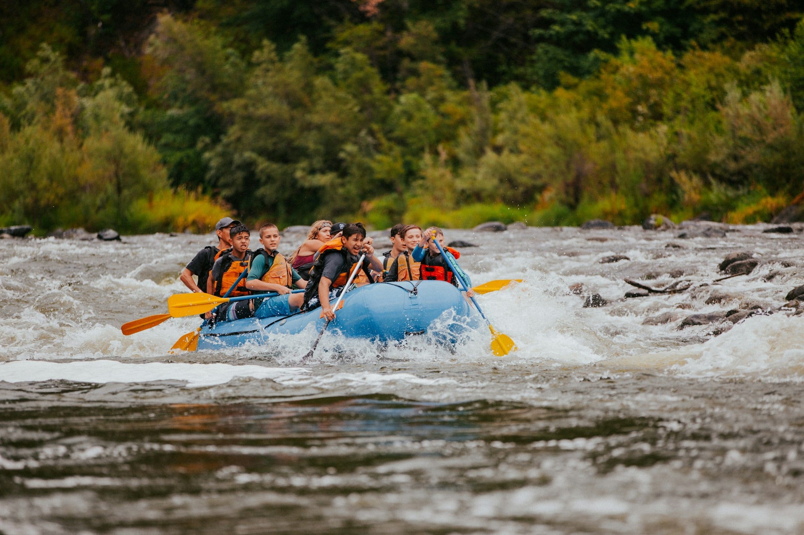
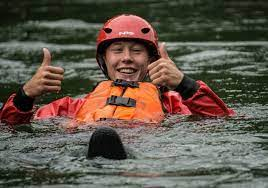
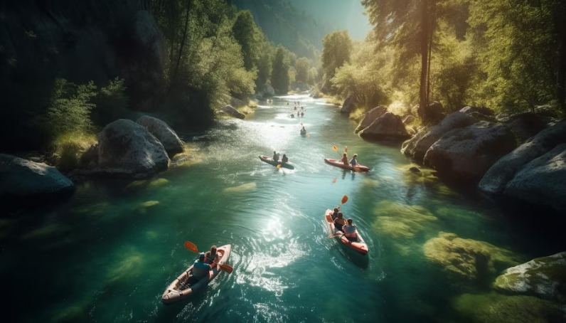

Our mission is to provide essential information about this activity and ignite your interest in trying or continuing to be involved in the sport. By offering rafting excursions and creating enjoyable experiences, we aim to ensure that you have an excellent experience with this sport. In summary, our focus is to share information about the sport and build new experiences.


White Water Rafting
History
Whitewater rafting can be traced back to 1811 when the first recorded attempt to navigate the Snake River in Wyoming was planned. With no training, experience, or proper equipment, the river was found to be too difficult and dangerous. Hence, it was given the nickname "Mad River"
The overall risk level on a rafting trip using proper precautions is low. Thousands of people safely enjoy rafting trips every year. Like most outdoor sports, rafting, in general, has become safer over the years. Expertise in the sport has increased, and equipment has become more specialized and improved in quality.
Adventure Awaits You!